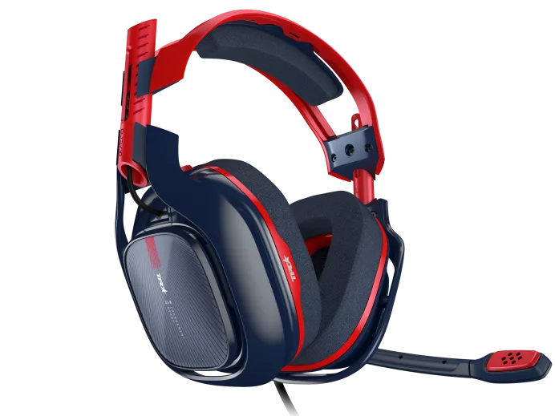

G431
With the G431 gaming headset, be surrounded by the game environment.
3235.00
Specs: Driver: 50 mm Frequency Response:20Hz-20kHz Impedance: 39 Ohms (passive) 5k Ohms (active) Sensitivity: 107 +/-3 dB
G432
With the G432, hear the whole game and be heard by your teammates. .
2250.00
Specs: Driver: 1.97 in (50 mm) Frequency Response:20Hz-20kHz Impedance:39 Ohms(passive) 5k Ohms(active) Sensitivity: 107 +/-3 dB

A40 TR
Premier wired headset for pro-level console and PC gaming, content creation and live streaming.
3295.00
Specs: Transducer Principle: Dynamic Frequency Response: 20-20k Hz Nominal impedance: 48 Ohms